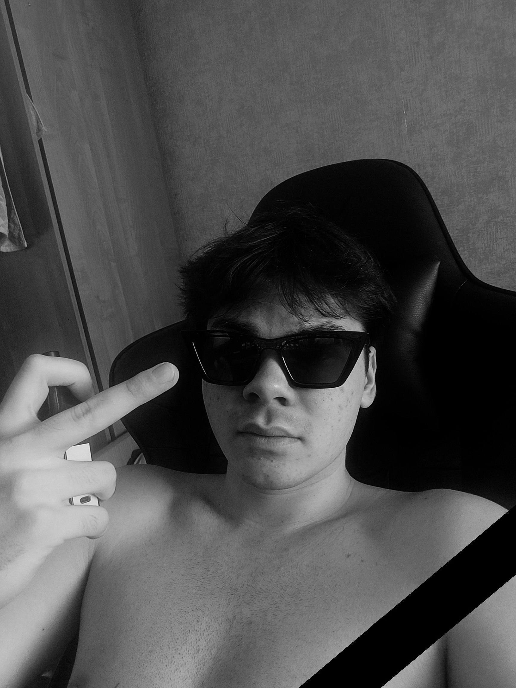

История Кама (все персонажи вымышлены и совпадения... короче похуй читай)
Его звали Кам. Не сценический псевдоним, не громкое имя для афиш, а просто Кам — производное от скучной фамилии Каменский, которое закрепилось за ним еще в общаге. Он был среднего роста, усатый, и покрыт, как говорила его бабушка, «богатым волосяным покровом»: густые брови, растущие на переносице, черная поросль на костяшках пальцев и неизменная щетина, которая делала его похожим на хмурого, но безобидного зверька. Отсюда и пошло — «волосатый ублюдок». Сначала обзывали, потом это стало почти ласковым прозвищем.
Кам хотел быть рэпером. Не просто читать под биты, а быть успешным рэпером. Он слушал старый русский рэп — «Касту», «Смоки Мо», — и в его голове тексты складывались сами собой. Он видел мир не просто так, а в рифму. Грязный подъезд рифмовался с «мечта ушла в обрез», вареная сгущенка из банки — с «жизнь жестянка», а вечно пьяный сосед дядя Гена — с «пути без перемен». Он записывал свои мысли в затертый блокнот, корявым, но старательным почерком.
Родители, простые люди, говорили: «Иди в IT, Кам. Сейчас это денежно». И Кам послушался. Он поступил в ПГУТИ — Поволжский государственный университет телекоммуникаций и информатики. На вывеске значилось «будущее за цифрой», а в душе у Кама будущее было за рифмой. Он ненавидел математику, но терпел, представляя, как однажды купит нормальный микрофон и запишет свой первый альбом. Мечта грела его изнутри, как маленькая батарея под толстовкой с капюшоном.
В ПГУТИ он познакомился с Димоном. Димон был такой же «волосатый ублюдок» в душе, только снаружи — обычный парень, у которого дома стояла старая звуковая карта. Они решили создать группу. Называться хотели «Микрорайон 9».
Кам сочинял тексты про то, что видел: про общагу ПГУТИ, где пахнет капустой и вареной картошкой, про вечные проблемы с деньгами до стипендии, про девушку, которую он так и не опробовал. Это были честные, грустные и злые строки. Димон набрасывал простые, но грузящие биты. Казалось, вот оно. Путь есть.
Но мечта — штука хрупкая. Особенно когда ты маленький волосатый ублюдок из ПГУТИ, у которого сессия горит ярче, чем прожекторы на концерте «АК-47».
Этой зимой Кам завалил экзамен по высшей математике. Не просто завалил, а пришел в состоянии, которое Димон назвал бы «олдскульный расслабон», а преподавательница — «неподобающим видом студента». Кам не пил, он просто ночью до трех ночи правил текст для нового трека «Ступени» и забыл выучить формулы. Ему казалось, что эмоции важнее интегралов. Преподавательница, женщина с перманентом и железными зубами, не оценила его творческий запал.
— Каменский, вы или учитесь, или... — она сделала многозначительную паузу, окинув взглядом его щетинистое лицо и мешки под глазами. — Идите нахуй!. Или рэп читать в переходах.
Ее слова прозвучали как приговор. Его отчислили.
В тот вечер Кам сидел на лавочке у общежития ПГУТИ. Снег падал на его шапку-гандонку, на плечи, на колени. Мимо сновали студенты, такие же, каким он был еще вчера. Они несли свои конспекты, ноутбуки и смутные надежды на будущее в IT. А у Кама в кармане лежал блокнот с последним текстом. Там были строчки: «Я прорвусь сквозь бетонные плиты/ Мои рифмы — динамитом пробиты».
Он достал блокнот, хотел что-то дописать, но ручка замерзла и не писала.
Димон позвонил вечером.
— Слышь, Кам? Че с инсталлом? Мы завтра писать новый трек?
Кам посмотрел на темные окна университета. В них горел свет. Там внутри, в этих стенах ПГУТИ, умирала его последняя отсрочка от взрослой жизни, от необходимости идти работать грузчиком или на стройку, где его тексты никому не будут нужны. Мать сказала: «Я же говорила. Иди работай».
— Не, Диман, — голос Кама сел. — Меня поперли. Из ПГУТИ.
— В смысле? А как же «Микрорайон 9»? Мы же...
— Никак. Нет универа — нет отсрочки. Завтра в военкомат, послезавтра, может, в Грач. А потом... — он запнулся. — Потом биты свои в планшетку складывай.
В трубке повисла тишина. Димон не знал, что сказать.
Кам шел по заснеженному городу, и его тень под фонарем была короткой и корявой, такой же, как он сам. Он проходил мимо старого ДК, где иногда выступали местные рэперы. На афише было написано: «Битва за микрофон. Вход 200 рублей». Он представил, как выходит на сцену, как свет слепит глаза, как он начинает читать свой текст про ПГУТИ, про то, как мечту зарывают в землю вместе с несданными экзаменами...
Но вместо этого он увидел свое отражение в темном стекле ДК. Маленький, замерзший, волосатый парень в старой куртке. Успешный рэпер? Нет.
Он не заплакал. Слез не было. Была только противная, холодная пустота внутри, как в заброшенном здании общежития после того, как всех выселили. Мечта, которую он так бережно вынашивал, которую рифмовал и пестовал, разбилась не о шоу-бизнес, не о продажность лейблов, не о хейтеров. Она разбилась о вышку, о проклятую высшую математику в ПГУТИ.
Дома он открыл блокнот на последней странице. Там было чисто. Он достал ручку, погрел ее в ладонях и медленно, криво, вывел:
«Мой район — микрорайон несбывшихся надежд.
ПГУТИ поставил крест, и это мой рубеж.
Я маленький и волосатый, в кармане пустота,
А где-то музыка живет, но для меня — не та».
Он закрыл блокнот и убрал его в ящик стола. Глубоко, под старые тетради. Туда, где мечты лежат тихо и не мешают жить настоящую, скучную, нерифмованную жизнь. За окном падал снег, и город молчал, даже не подозревая, что потерял сегодня одного из своих самых честных, хоть и несостоявшихся, поэтов.
Последнее фото репера Кама, попавшее в интернет
